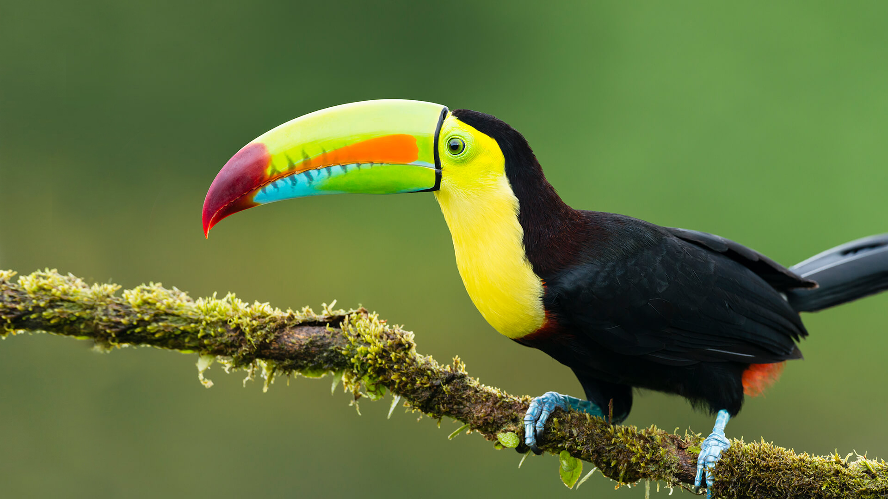
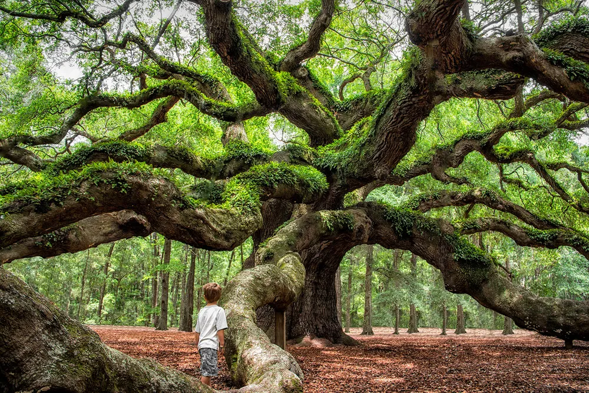
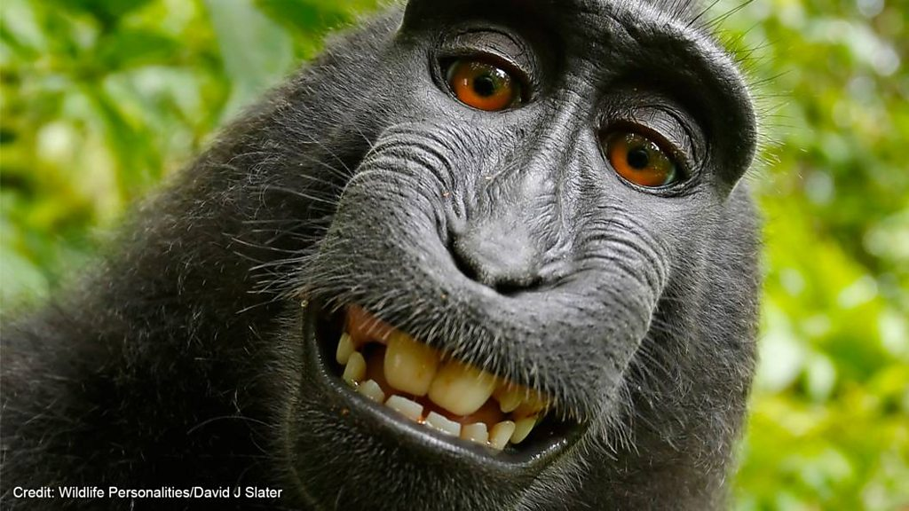
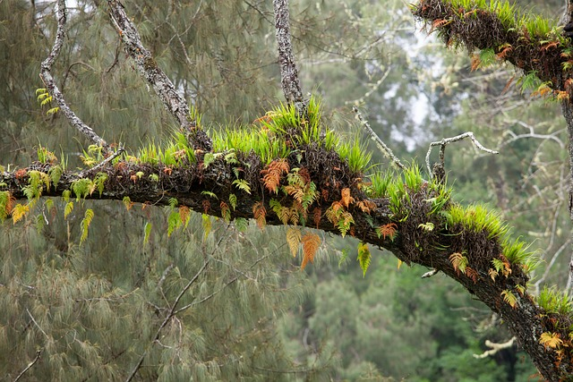
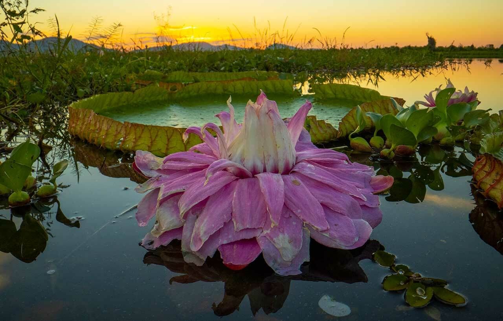

Állatvilág
Tukánok
Nagy, feltűnő csőrükkel könnyen felismerhetők. Gyümölcsöket fogyasztanak, és a magok terjesztésében is szerepük lehet.
Élő kincsek
A lombkoronában, a fatörzseken és az erdő talaján egymástól függő fajok élnek.

Nagy, feltűnő csőrükkel könnyen felismerhetők. Gyümölcsöket fogyasztanak, és a magok terjesztésében is szerepük lehet.

A fák felső szintje fényt gyűjt, táplálékot és búvóhelyet ad, valamint sajátos mikroklímát alakít ki.

Sok faj a fák között mozog, társas csoportokban él, és fontos szerepet játszik az erdei táplálékhálózatban.

Egyes orchideák és páfrányok más növényeken kapaszkodnak meg, de nem feltétlenül vonják el gazdanövényük tápanyagait.

Az amerikai kontinens egyik csúcsragadozója. Az egészséges élőhelyek és az összefüggő erdőterületek létfontosságúak számára.

A meleg, nedves klíma sok növény számára kedvező, de az erdő különböző szintjein eltérő fényviszonyok uralkodnak.